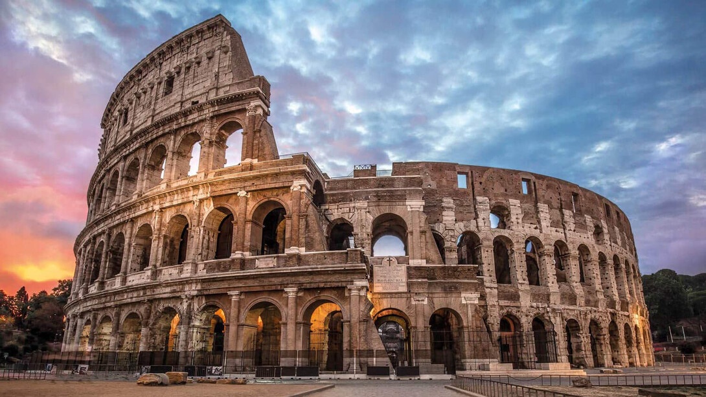

El Coliseo Romano es una de las construcciones más famosas de la Antigua Roma. Fue construido hace casi 2.000 años se utilizaba principalmente para espectáculos públicos.

El Coliseo Romano se encuentra en Roma , Italia, en el centro de la ciudad. Representa la arquitectura de la Antigua Roma, la cual se realizaban espectáculos para el público tanto como peleas entre gladiadores, cacería de animales como leones rinocerontes etc o representaciones o recreaciones.